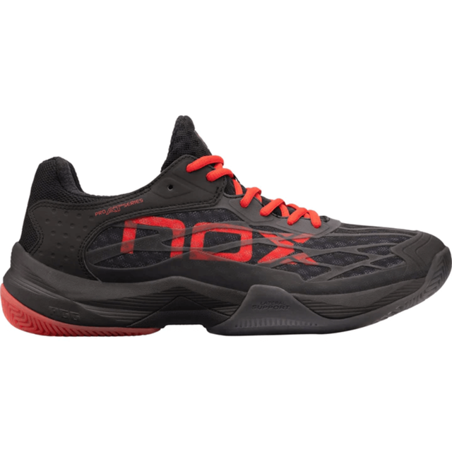

Calzado para Pádel
Elegir el calzado adecuado es fundamental para mejorar tu rendimiento y evitar lesiones en la pista. Aquí te contamos los tipos de zapatillas que mejor se adaptan al pádel, sus características y recomendaciones para comprar.
Tipos de Calzado
- Zapatillas de suela de espiga: ideales para pistas de césped artificial, brindan buen agarre y estabilidad.
- Zapatillas de suela lisa: recomendadas para pistas indoor, permiten movimientos rápidos y cambios de dirección.
Consejos para Elegir
- Busca amortiguación para proteger tus articulaciones.
- Prioriza un buen soporte lateral para los movimientos laterales del pádel.
- Elige un calzado cómodo y de tu talla exacta.
Galería de Calzado
